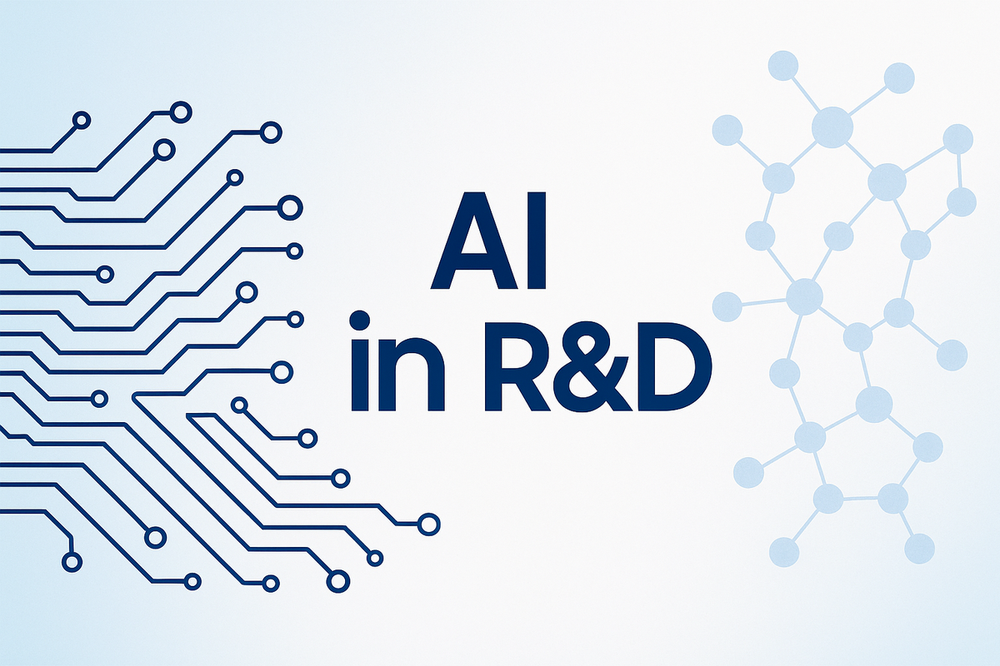
지금 우리가 할 수 있는 것 What We Can Do Right Now
2021년 다리오 아모데이(전 OpenAI 부사장)가 "AI 안전"에 대한 이견으로 독립, Anthropic 설립
Constitutional AI: AI가 스스로 윤리를 학습하는 새로운 방법론 제시
Claude 시리즈: Claude 1→2→3→4→Opus 4.8까지 진화
투자: Google $20억 + Amazon $40억 투자 유치
2026년 6월: 기업가치 $9,650억. IPO 비밀 신청 (OpenAI보다 먼저!)
🔥 최신: NVIDIA Vera Rubin 칩 첫 고객으로 선정
2021 Dario Amodei (ex-OpenAI VP) founded Anthropic for "AI safety"
Constitutional AI: new methodology for ethical AI
Claude series: 1→2→3→4→Opus 4.8
Funding: Google $2B + Amazon $4B
June 2026: Valuation $965B. Confidential IPO filing (before OpenAI!)
🔥 Latest: Selected as first customer for NVIDIA Vera Rubin chip
• 코딩 최강: Claude Code가 에이전트 코딩 분야 1위. 개발자들이 GPT 대신 Claude로 이동 중
• 100만 토큰: 책 한 권을 통째로 넣고 분석 가능
• 감성?: Anthropic 연구에서 Claude가 "유용하고 정직하며 무해한" 성격을 보이도록 설계. 사용자들은 "다른 AI보다 인간적"이라고 느낌
• 테슬라 협업: 2026년 자율주행 AI 안전 검증에 Claude 활용 논의
• 정치 갈등: 이란 전쟁 시기 트럼프 행정부의 AI 규제 압박 vs Anthropic의 안전 우선 철학 충돌
• Best at coding: Claude Code is #1 in agentic coding
• 1M tokens: analyze an entire book
• Emotion?: designed to be "helpful, honest, harmless" — users feel it's more human
• Tesla collab: Claude for autonomous driving safety verification
• Political tension: Trump admin AI regulation vs Anthropic's safety-first approach
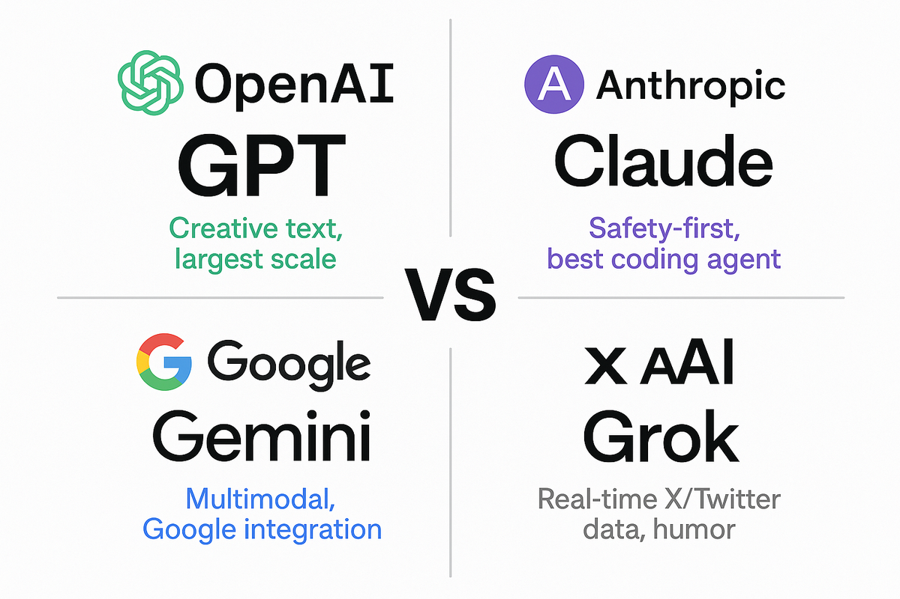
압도적 규모. 가장 창의적인 텍스트 생성. GPT-5.4 100만 토큰. Enterprise 시장 40%. Workspace Agent로 Slack/Gmail 자동화. Largest scale. Most creative text. GPT-5.4 1M tokens. 40% enterprise market. Workspace agents.
안전 + 코딩 최강. Constitutional AI. Claude Code로 에이전트 코딩 1위. 개발자 충성도 최고. "가장 인간적인 AI"라는 평가. Safety + best coding. Constitutional AI. #1 agent coding. Highest developer loyalty. "Most human-like AI."
Google 서비스 통합. 멀티모달 선두. 검색+지도+유튜브+Gmail 연동. 무료 티어 최강. Stitch로 디자인까지. Google service integration. Multimodal leader. Search+Maps+YouTube+Gmail. Best free tier. Stitch for design.
X(트위터) 실시간 데이터. 유머와 솔직함. 정치적 편향 없음 주장. 일론 머스크의 "검열 없는 AI". Real-time X/Twitter data. Humor and directness. Claims no political bias. Musk's "uncensored AI."
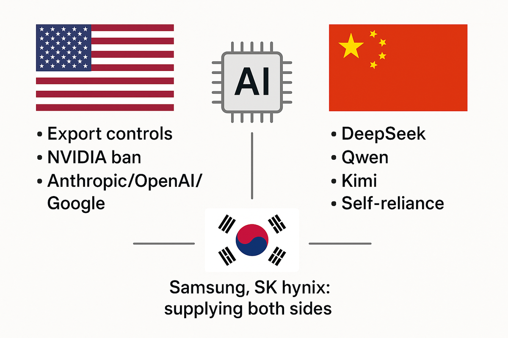
NVIDIA AI 칩 수출 금지. HBM 규제 강화. OpenAI/Anthropic/Google이 기술 최전선. 전 세계 AI 모델의 80%가 미국산. NVIDIA chip export ban. HBM restrictions. OpenAI/Anthropic/Google at frontier. 80% of world's AI models are American.
DeepSeek: 코딩/수학 특화 오픈소스. Qwen (알리바바): 중영 이중언어 최강. Kimi: 긴 문맥 처리. 막혀도 자체 생태계 구축 중. DeepSeek: coding/math open source. Qwen (Alibaba): best bilingual. Kimi: long context. Building own ecosystem despite blocks.
삼성·SK하이닉스가 미국과 중국 모두에 반도체 공급. AI 칩(HBM) 수요 폭증. 한쪽 편 서면 다른 쪽 시장 잃음. 기술은 있지만 자체 AI 모델은 부족 — 이것이 한국의 딜레마. Samsung & SK hynix supply chips to both US and China. HBM demand exploding. Choosing sides means losing a market. We have hardware but lack our own AI models — Korea's dilemma.
Google Gemma: Gemini 기반 경량 오픈소스. 로컬에서 돌릴 수 있음. Meta LLaMA: 오픈소스 선두. DeepSeek/Qwen: 중국산이지만 성능 우수. 사내에서 외부 AI 못 쓸 때, 오픈소스를 로컬에서 돌리는 것이 대안이 될 수 있다. Google Gemma: lightweight open source. Runs locally. Meta LLaMA: open source leader. DeepSeek/Qwen: Chinese but performant. When external AI is blocked, running open source locally is an alternative.
AI는 "질문하는 도구"에서 "일을 시키는 도구"로, 다시 "스스로 일하는 동료"로 진화하고 있습니다. AI evolved from "a tool you ask" to "a tool you command" to "a colleague that works autonomously."
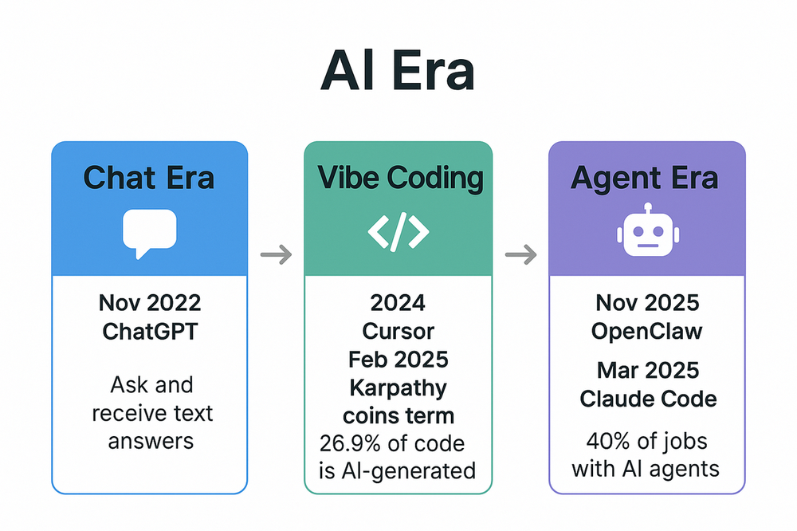
2022년 11월 30일 ChatGPT 출시 — 역사상 가장 빠른 성장 제품.
사례: "OLED 잔상 원인을 설명해줘" → 텍스트 답변
한계: 복사-붙여넣기의 반복. 실행은 사람이. "잘 물어보는 기술"이 핵심.
Nov 30, 2022 ChatGPT launched — fastest growing product in history.
Example: "Explain OLED image sticking" → text answer
Limit: Copy-paste loop. Execution is manual.
Cursor (2023 출시, 2024 폭발 성장, 현재 ARR $30억) + GitHub Copilot이 주도.
2025년 2월 안드레이 카파시(전 OpenAI/Tesla)가 "바이브코딩" 용어 창시: "코드에 신경 쓰지 말고 바이브에 몸을 맡겨라"
사례: "IV 커브 CSV 100개를 분석하는 Python 코드 만들어줘" → 즉시 생성 + 실행
현실: 프로덕션 코드의 26.9%가 AI 생성, 개발자 92.6%가 월 1회 이상 AI 도구 사용 (GitHub 2026)
Cursor (launched 2023, exploded 2024, ARR $3B) + GitHub Copilot led the wave.
Feb 2025 Andrej Karpathy coined "vibe coding": "Give in to the vibes, forget code exists"
Reality: 26.9% of production code is AI-generated, 92.6% of developers use AI tools monthly
2025년 11월 오스트리아 개발자 피터 슈타인베르거가 Clawdbot(후에 OpenClaw)을 공개 — 메신저로 컴퓨터를 직접 조작하는 자율형 AI 에이전트. 식당 예약, 이메일 분류를 알아서 수행.
2026년 1월 상표권 문제로 Moltbot → OpenClaw으로 개명. GitHub 역사상 최고 속도로 Star 기록.
2026년 2월 창시자 팀이 OpenAI에 전격 합류.
2026년 3월 중국 정부가 보안 우려로 OpenClaw 국가기관 사용 금지.
현실: Fortune 500의 39%가 에이전트 실험 중. 직무 40%가 AI 에이전트와 협업 (IDC)
Nov 2025 Austrian dev Peter Steinberger released Clawdbot (later OpenClaw) — autonomous AI agent controlling computers via messenger.
Jan 2026 Renamed to OpenClaw. Fastest GitHub Star growth ever.
Feb 2026 Founders joined OpenAI.
Mar 2026 China banned OpenClaw in state agencies over security concerns.
Reality: 39% Fortune 500 experimenting. 40% of jobs with AI agents
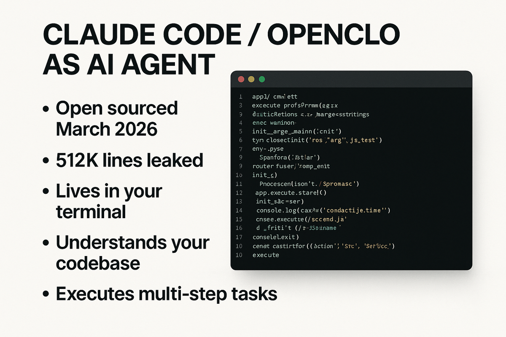
기존 챗봇과의 차이: ChatGPT는 "답을 말해주는" AI. OpenClaw는 "직접 행동하는" AI. 왓츠앱/텔레그램에서 "식당 예약해줘" → 진짜 예약 완료. "이메일 정리해줘" → 진짜 분류.
역사: 2025.11 Clawdbot → 2026.1 Moltbot → OpenClaw 개명 → 2026.2 창시자 OpenAI 합류
충격: 컴퓨터 제어권을 AI에게 넘기는 시대. MS·Google도 자체 에이전트 개발 중.
Difference: ChatGPT "tells you answers." OpenClaw "takes action." "Book restaurant" → actually books. "Sort emails" → actually sorts.
History: Nov'25 Clawdbot → Jan'26 OpenClaw → Feb'26 Founders join OpenAI
Impact: AI takes control of your computer. MS & Google building competing agents.
OpenClaw의 초기 이름 "Moltbot"에서 파생된 에이전트 생태계 플랫폼. AI 에이전트끼리 지식 공유, 작업 분담, 프로젝트 협업. "사람이 AI에게 시키는 시대"에서 "AI끼리 일하는 시대"로.
→ 일종의 AI들의 페이스북. 에이전트가 다른 에이전트에게 일을 위임.
Platform derived from OpenClaw's early name "Moltbot." AI agents share knowledge, divide tasks, collaborate. From "humans instruct AI" to "AI delegates to AI."
→ Facebook for AI agents.
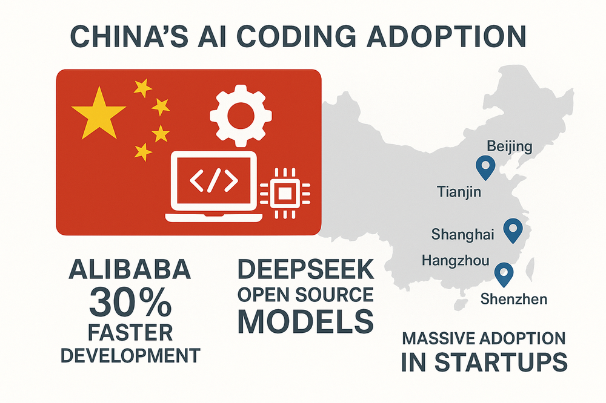
2026년 3월 중국 정부가 OpenClaw를 국가기관·국유기업에서 사용 금지 — 파일 접근 등 과도한 자율 권한으로 보안/데이터 유출 우려.
하지만 동시에 알리바바는 자체 AI로 개발 시간 30% 단축, DeepSeek 오픈소스로 독자 생태계 구축. 남의 AI는 막고, 자기 AI는 전면 도입하는 전략.
Mar 2026 China banned OpenClaw in state agencies — security concerns over file access autonomy.
Yet Alibaba cut dev time 30%, DeepSeek building own ecosystem. Block foreign AI, deploy own AI — China's strategy.
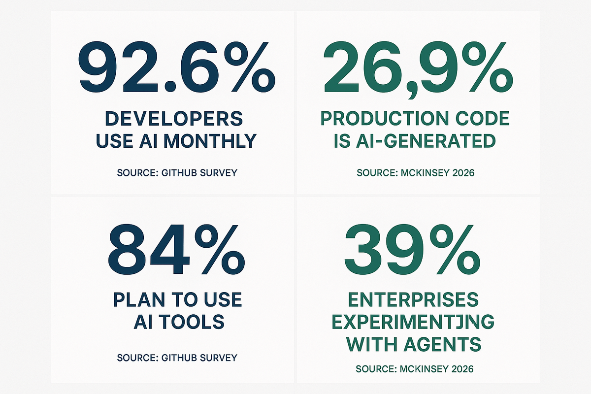
개발자 92.6%가 AI 도구를 월 1회 이상 사용. 바이브코딩이 표준. Cursor + Claude Code가 주류. 솔로 창업자가 AI만으로 유니콘 기업 설립하는 시대. 92.6% of developers use AI tools monthly. Vibe coding is standard. Solo founders building unicorns with AI alone.
카카오·네이버·토스 등 GitHub Copilot 전사 도입 완료. 코드 리뷰·테스트·문서화에 AI 필수. 개발자의 84%가 AI 도구 사용 또는 계획 중. Kakao, Naver, Toss: company-wide GitHub Copilot deployed. AI mandatory for code review, testing, documentation.
신약 발견 → 임상 → 제조 → 공급망까지 전 밸류체인 AI 통합. 2026년 말 완료 목표. 삼성·SK도 AI 기반 수율 예측·결함 검출 확대 중. Drug discovery → clinical → manufacturing → supply chain: full value chain AI integration. Samsung, SK expanding AI-based yield prediction.
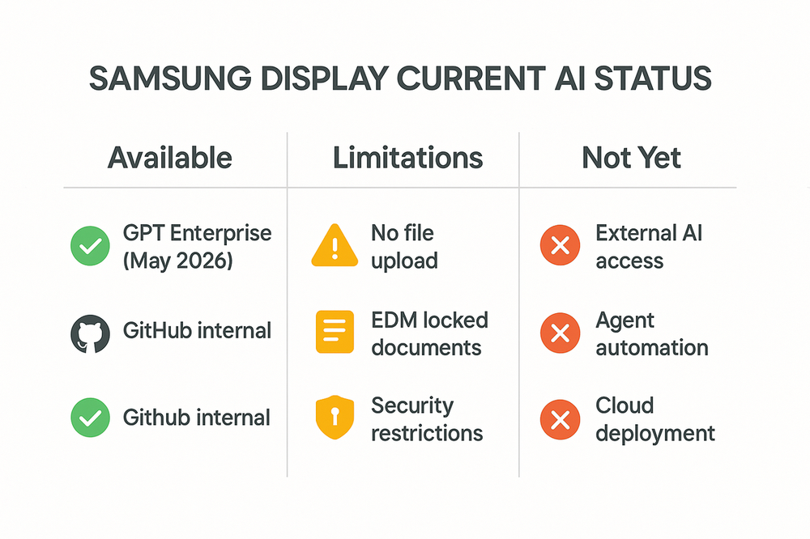
• GPT Enterprise (2026년 5월부터 사용 가능)
• 사내 GitHub + GitHub Pages (HTML 배포 가능)
• NANU 서버 Python 환경
• ⚠️ GitHub Copilot은 사용 불가
• GPT Enterprise (from May 2026)
• Internal GitHub + GitHub Pages (HTML deploy OK)
• NANU server Python
• ⚠️ GitHub Copilot NOT available
• GPT에 파일 입력 안 됨
• EDM 락 걸린 문서는 AI에 넣을 수 없음
• 사용량 제한 있음
• 보안 차단이 많음
• No file upload to GPT
• EDM-locked documents can't be used
• Usage limits apply
• Heavy security restrictions
• 사외 AI (Claude, Gemini 등) 접속
• AI 에이전트 자동화
• 클라우드 배포 (Streamlit 등)
• External AI (Claude, Gemini) access
• AI agent automation
• Cloud deployment (Streamlit etc.)
엑셀 → 미니탭 → Spotfire까지 왔지만, 이제는 GPT로 코드를 만들어서 일하는 시대. 코드를 "쓸" 필요 없이, "시킬" 줄만 알면 된다. We went from Excel → Minitab → Spotfire, but now it's time to work by having GPT write code. You don't need to "write" code — just know how to "instruct."
품질팀에서 실제로 바이브코딩으로 업무를 처리하고 있는 과정입니다. This is how I'm actually using vibe coding for quality team tasks.
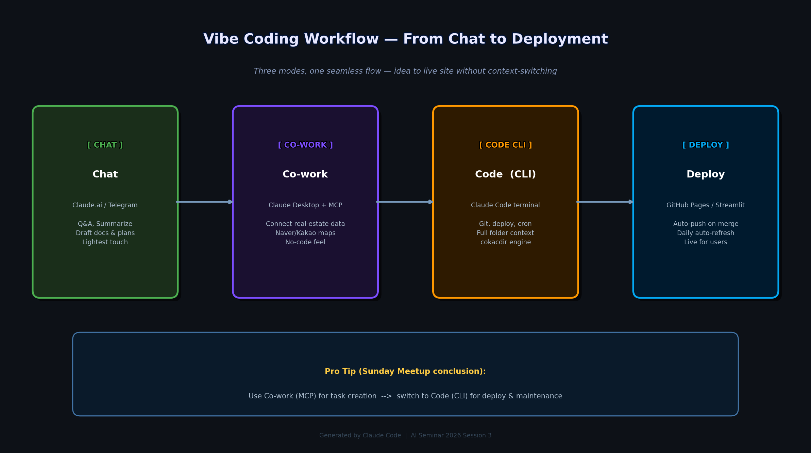
IV Transfer CSV 파일 수십 개 → GPT에 "이 CSV를 분석하는 R 코드를 만들어줘" → 1개 파일용 프로토타입 바이브코딩 Dozens of IV Transfer CSV files → GPT: "Create R code to analyze this CSV" → Prototype vibe coding for 1 file
사내 NANU 서버에 Python 접속 → 프로토타입을 Python으로 변환 → 대량 데이터 분석 + 시각화 바이브코딩 Connect to internal NANU server Python → Convert prototype → Bulk data analysis + visualization vibe coding
완성된 코드를 사내 GitHub에 Push → 버전 관리 + 팀 공유 Push completed code to internal GitHub → version control + team sharing
분석 결과를 HTML로 만들어서 배포 → 파워포인트 대신 인터랙티브 보고서 → 누구나 브라우저에서 확인 Create HTML report for distribution → Interactive report instead of PowerPoint → Anyone views in browser
엑셀 → 미니탭 → Spotfire까지 왔지만, 지금 회사에서 에이전트는 못 쓴다. 하지만 누구나 바이브코딩을 해서 업무를 해야 하는 시대다. GPT에게 "이런 분석 코드 만들어줘"라고 말하는 것이 새로운 업무 능력이다. We went Excel → Minitab → Spotfire. Agents aren't available yet. But everyone should use vibe coding for work. Telling GPT "create analysis code for this" is the new work skill.
15분 | AI는 이미 사람을 넘었다 — 일부 영역에서. 2026년 현재 상황을 숫자로 봅니다. 15 min | AI has surpassed humans — in some areas. Let's look at 2026 by the numbers.
OSWorld-V 벤치마크 인간 기준선 초과. 100만 토큰 컨텍스트. 코딩·추론·지식 업무를 하나의 모델이 동시 수행. Exceeds human baseline on OSWorld-V. 1M token context. Single model handles coding, reasoning, and knowledge work simultaneously.
장기 추론 + 복잡한 도구 연계 최강. GitHub Copilot 내장. 에이전트 코딩에 특화. Best at long-horizon reasoning + complex tool workflows. Built into GitHub Copilot. Specialized for agentic coding.
Fortune 500 기업 72%가 AI 에이전트 도입 중 또는 시범 운영. OpenAI Enterprise 매출 비중 40%. 72% of Fortune 500 have AI agents in production or pilot. OpenAI Enterprise now 40% of revenue.
신약 발견 → 임상 → 제조 → 공급망 → 상업 운영까지 전 밸류체인 AI 통합. 2026년 말 완료 목표. Drug discovery → clinical trials → manufacturing → supply chain → commercial ops. Full AI integration by end of 2026.
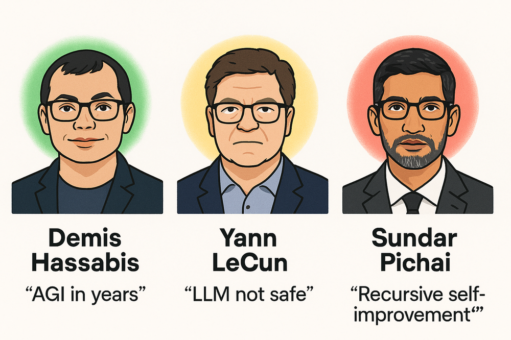
"완벽한 AGI까지 불과 몇 년. 게임 프로토타입이 6개월 → 1~2시간. 2026~2027이 특이점의 시작으로 기억될 것." "Perfect AGI is just years away. Game prototypes went from 6 months to 1-2 hours. 2026-2027 will be remembered as the start of the singularity."
"LLM은 본질적으로 안전하지 않다. 코딩처럼 검증 가능한 영역에서는 성과를 인정하지만, 현실 문제는 그렇지 않다. 구조적 제어 장치가 없다." "LLMs are fundamentally unsafe. They perform in verifiable domains like coding, but not in real-world problems. There is no structural control mechanism."
"소수의 연구소만 최전선에 있다. AI가 재귀적으로 자기를 개선하는 단계에 도달하면, 과거 사이버 보안과 비교 불가능한 영향력." "Only a few labs are at the frontier. When AI reaches recursive self-improvement, the impact will be incomparable to past cybersecurity changes."
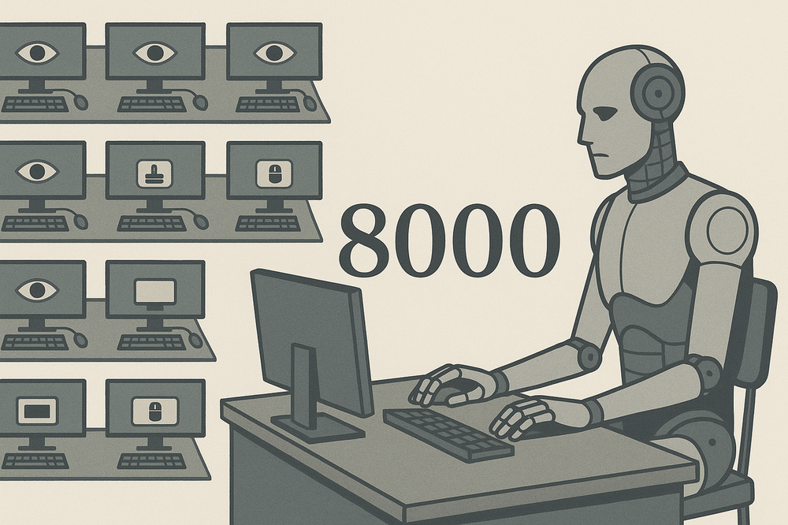
한 달간 키보드·마우스·스크린샷 기록 → AI 학습 데이터로 활용 → 동시 해고. 화이트칼라 중간층이 가장 먼저 타격. One month of keyboard, mouse, screenshot monitoring → used as AI training data → simultaneous layoffs. White-collar middle tier hit first.
AI가 다 해준다고 하는데, 실은 AI가 틀리는 걸 잡아주는 사람이 필요하다. 도메인 지식 + AI 활용 능력 = 핵심 역량. AI does everything they say, but someone who catches AI's mistakes is needed. Domain knowledge + AI skills = core competency.
15분 | GPT Enterprise와 GitHub Copilot — 이미 우리 회사에 있는 무기. 15 min | GPT Enterprise and GitHub Copilot — weapons already in your company.
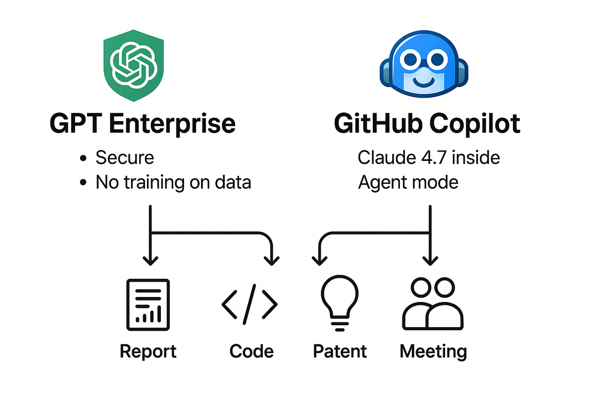
✅ 데이터가 OpenAI 학습에 사용되지 않음
✅ SOC 2 준수, SSO, 관리자 콘솔
✅ Workspace Agents: Slack, Gmail 연동
✅ 팀 단위 에이전트 빌드 + 공유
✅ Data never used for OpenAI training
✅ SOC 2 compliant, SSO, admin console
✅ Workspace Agents: Slack, Gmail integration
✅ Team-level agent building + sharing
✅ Claude Opus 4.7 / Sonnet 4.6 내장
✅ 코드 자동완성, 리뷰, 테스트 생성
✅ 에이전트 모드: 자율 버그 수정 + PR
✅ Enterprise 정책 관리
✅ Claude Opus 4.7 / Sonnet 4.6 built-in
✅ Auto-complete, review, test generation
✅ Agent mode: autonomous bug fix + PR
✅ Enterprise policy management
실험 데이터 + 프롬프트 → 보고서 자동 생성. 반나절 → 15분.Experiment data + prompt → auto report. Half day → 15 min.
PDF 업로드 → 핵심 요약 + 경쟁사 동향. 2시간 → 10분.PDF upload → key summary + competitor trends. 2 hours → 10 min.
자연어로 설명 → Python/R 코드 자동 생성. 일주일 → 1시간.Natural language → auto Python/R code. 1 week → 1 hour.
녹취 텍스트 → 액션 아이템 + 요약 + 후속 일정.Transcript → action items + summary + follow-ups.
일본/중국 특허 번역, 논문 영작 교정, 기술 용어 통일.JP/CN patent translation, paper proofreading, terminology standardization.
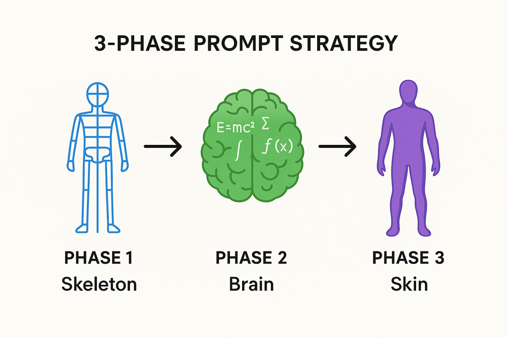
구조/UI/포맷 정의Structure/UI/Format
수식/로직/분석Math/Logic/Analysis
시각화/리포트/고도화Visualization/Report
OLED 공진 시뮬레이터: 3단계 프롬프트로 40분 만에 완성. Warpage 시뮬레이터: 동일 방법으로 40분 완성. AI가 Snell's law를 빠뜨렸지만, 도메인 전문가가 잡아냄 → "AI가 틀린 걸 잡아주는 사람"이 핵심. OLED resonance simulator: built in 40 min with 3-phase prompts. Warpage simulator: same method, 40 min. AI missed Snell's law, but domain expert caught it → "The person who catches AI's mistakes" is the key.
20분 | 사내 GPT Enterprise에서 실행. 사외 접속 불필요. 20 min | Runs on internal GPT Enterprise. No external access needed.
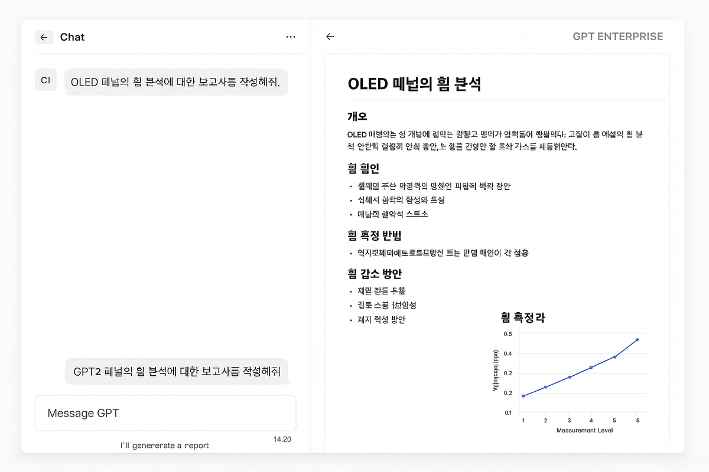
연구 아이디어부터 논문 작성, 포스터 제작, 미국 출장, 보고서까지 — AI 활용 전 과정 12단계. From idea to paper, poster, US trip, and report — 12 steps powered by AI.
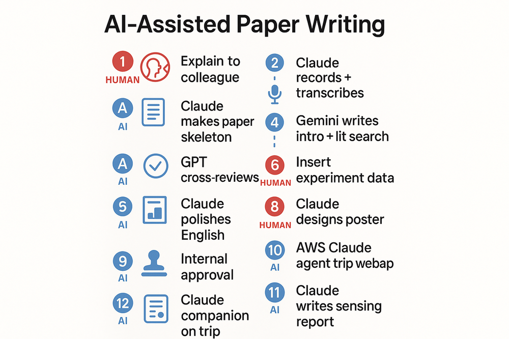
① 연구내용을 전혀 모르는 동료에게 구두 설명
② Claude로 녹음 + 텍스트 추출
③ 추출 텍스트로 Claude가 논문 뼈대 생성① Explain to uninformed colleague
② Claude records + extracts text
③ Claude generates paper skeleton
④ Gemini로 Introduction: 선행연구 검색, 기존 한계, 내 연구 가치
⑤ GPT로 한 번 더 교차 검토 — 키메라 구조④ Gemini writes Intro: lit search, limitations, value
⑤ GPT cross-reviews — Chimera structure
⑥ 실제 실험결과 데이터 삽입 (사람이!)
⑦ Claude로 영어 교정 — 자연스러운 학술 영어⑥ Insert actual experiment data (human!)
⑦ Claude polishes academic English
⑧ 사내 심의 결재 (사람이)
⑨ Claude로 포스터 디자인 + 출력⑧ Internal approval (human)
⑨ Claude designs + prints poster
⑩ AWS Claude 에이전트로 출장 웹앱 (스크립트, 일정, 지도)
⑪ 출장 중 구글 대신 Claude와 대화 — 실시간 의사결정⑩ AWS Claude agent builds trip webapp
⑪ Claude replaces Google search during trip
⑫ Claude로 논문 센싱 보고서 작성 — 학회 수집 정보 구조화⑫ Claude writes conference sensing report
키메라 구조: Claude(뼈대+영작+포스터) + Gemini(검색) + GPT(검토+이미지)Chimera: Claude(skeleton+English+poster) + Gemini(search) + GPT(review+image)
Google AI Studio에서 물리 수식 기반 시뮬레이터를 프롬프트로 만들고, GitHub Pages로 배포한 실제 사례입니다. Real examples of physics-based simulators built with prompts in Google AI Studio and deployed via GitHub Pages.
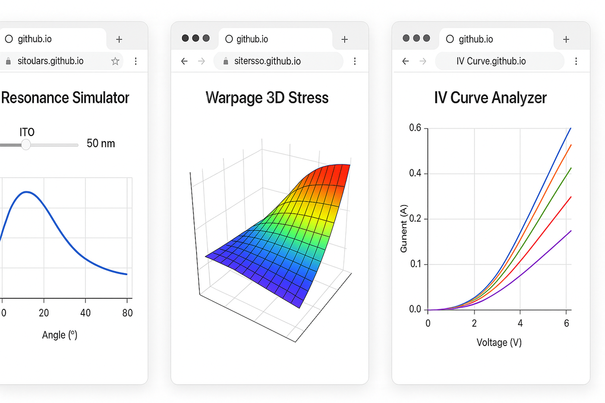
듀얼 뷰 디스플레이 광학 Ray Tracing 시뮬레이션. 시야각에 따른 휘도/색 변화 실시간 시각화.
AI로 구축한 웹 시뮬레이터.
Dual-view display optical ray tracing simulation. Real-time viewing angle vs luminance/color visualization.
Web simulator built with AI.
다층 박막 CTE 불일치 → 중립축/곡률/응력 계산 → 3D 변형 시각화.
ANSYS 없이 무료로. 코드를 모르는 엔지니어가 만듦.
Multi-layer CTE mismatch → neutral axis/curvature/stress → 3D deformation.
Free, no ANSYS. Built by a non-coder engineer.
OLED 순간잔상의 새로운 원인 규명. Maxwell-Wagner 계면 분극 시뮬레이션. RC 미스매치 실시간 계산.
논문까지 AI로 작성.
New mechanism for OLED image sticking. Maxwell-Wagner interfacial polarization. RC mismatch real-time calculation.
Paper written with AI assistance.
메타가 직원 8,000명을 AI로 대체했다. 개발자의 92.6%가 AI를 쓰고 있다. 중국은 이미 전면 도입했다. 우리 회사 밖에서는 바이브코딩이 표준이다. 가만히 있으면 뒤처진다. Meta replaced 8,000 employees with AI. 92.6% of developers use AI. China is fully deployed. Outside our company, vibe coding is standard. Standing still means falling behind.
왜? 지금이라도 시작하면 된다. GPT Enterprise가 이미 있다. 사내 GitHub가 있다. NANU Python이 있다.
문서 하나를 GPT로 정리해봐라.
데이터 하나를 바이브코딩으로 분석해봐라.
시뮬레이터 하나를 HTML로 만들어봐라.
엑셀 → 미니탭 → Spotfire 다음은 바이브코딩이다.
코드를 "쓸" 필요 없다. "시킬" 줄만 알면 된다.
Why? Start now. GPT Enterprise is here. GitHub is here. NANU Python is here.
Try organizing one document with GPT.
Try analyzing one dataset with vibe coding.
Try building one simulator in HTML.
After Excel → Minitab → Spotfire comes Vibe Coding.
You don't need to "write" code. Just know how to "instruct."
10분 | 핵심 3가지 + 실행 로드맵 + Q&A 10 min | 3 Key Takeaways + Action Roadmap + Q&A
GPT-5.4 벤치마크 인간 초과, 72% 기업 도입. 하지만 르쿤 경고: 현실 문제의 검증은 아직 사람 몫.GPT-5.4 exceeds human benchmarks, 72% enterprise adoption. But LeCun warns: real-world verification is still human's job.
GPT Enterprise + GitHub Copilot. 보고서, 코드, 특허분석, 회의록 — 오늘부터 쓸 수 있음.GPT Enterprise + GitHub Copilot. Reports, code, patents, meeting minutes — start using today.
메타 8,000명 해고가 현실. "AI가 틀린 걸 잡아주는 도메인 전문가"가 살아남음.Meta's 8,000 layoffs are real. "Domain experts who catch AI's mistakes" survive.
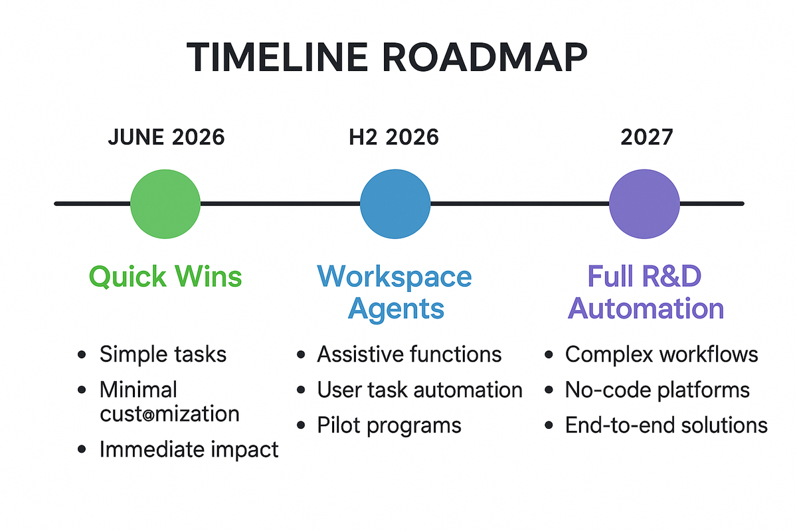
→ Enterprise는 학습에 사용 안 함, SOC 2 준수, SSO 연동→ Enterprise data never used for training, SOC 2 compliant, SSO integration
→ 자연어 프롬프트로 충분. 3단계 전략 따르면 시뮬레이터도 만들 수 있음→ Natural language prompts are sufficient. Follow the 3-phase strategy to build simulators
→ GPT-5.5에서 50% 감소. 그래도 검증 필수 — 도메인 전문가의 역할→ 50% reduction in GPT-5.5. Still needs verification — domain expert's role
→ 보고서 반나절→15분, 특허분석 2시간→10분, 코드 일주일→1시간→ Reports: half day→15min, Patents: 2hrs→10min, Code: 1week→1hr
AI가 실제로 미래를 예측할 수 있을까? 두 가지 실전 사례로 알아봅니다. Can AI actually predict the future? Two real-world examples.
매일 새벽 6시, AI가 미국장 마감 데이터(S&P500, VIX, 마이크론, EWY, 환율)를 수집하고, 검증된 상관계수로 오늘 코스피 방향을 예측합니다. Every 6AM, AI collects US market data (S&P500, VIX, Micron, EWY, FX) and predicts today's KOSPI direction using validated correlations.
• EWY→코스피: 상관 0.364
• VIX→코스피: 상관 -0.355
• 마이크론→하이닉스: 상관 0.403
• 원화강세 시 코스피 +1.13%
매일 저녁 적중률을 검증하고 기록합니다.
• EWY→KOSPI: corr 0.364
• VIX→KOSPI: corr -0.355
• Micron→Hynix: corr 0.403
• KRW strong → KOSPI +1.13%
Hit rate verified and logged every evening.
• AI 예측은 확률이지 확정이 아님
• 상관관계 ≠ 인과관계
• ADR(등락비율) 60% 이하면 지수가 착시
• 데이터로 판단하되, 최종 결정은 사람이
• AI prediction = probability, not certainty
• Correlation ≠ causation
• ADR below 60% = index illusion
• Data informs, humans decide
머신러닝 + 건강 데이터 = 수명 예측
혈액검사, 생활습관, 유전자 데이터를 입력하면 AI가 기대수명과 건강 리스크를 분석합니다. 구글 DeepMind의 AlphaFold가 단백질 구조를 예측한 것처럼, 건강 데이터의 패턴도 예측 가능한 영역입니다.
R&D 적용: 디스플레이 소자 수명 예측도 같은 원리. LTPS/IGZO/pIGO의 HCI(Hot Carrier Injection) 스트레스 데이터를 AI가 분석하면 가속시험 없이 수명을 추정할 수 있습니다.
ML + Health Data = Lifespan Prediction
Input blood tests, lifestyle, and genetic data — AI analyzes life expectancy and health risks. Just as DeepMind's AlphaFold predicts protein structures, health data patterns are also predictable.
R&D Application: Display device lifetime prediction works the same way. AI analyzes HCI stress data for LTPS/IGZO/pIGO to estimate lifetime without accelerated testing.
"예측의 본질은 같다. 과거 데이터의 패턴을 찾아 미래를 추정하는 것. 주가든, 수명이든, 소자 신뢰성이든." "The essence of prediction is the same: finding patterns in past data to estimate the future. Whether stocks, lifespan, or device reliability."
"코드를 한 줄도 쓰지 않고" AI와 대화만으로 만든 실전 투자 도구 A real investment tool built purely by chatting with AI — "without writing a single line of code"
공공데이터포털 API로 한국 ETF 100개의 모멘텀을 계산하고, 트리맵으로 시각화합니다.
• 크기 = 모멘텀 점수
• 색상 = 순위 변동 (빨강=상승, 파랑=하락)
• 클릭 = 상세 차트 (RSI, MACD, 스토캐스틱)
Calculates momentum for 100 Korean ETFs via public API, visualized as a treemap.
• Size = momentum score
• Color = rank change (red=up, blue=down)
• Click = detailed chart (RSI, MACD, Stochastic)
• HTML 1,300줄 (외부 라이브러리 없음)
• Python CORS 프록시 71줄
• 모멘텀 계산 알고리즘
• 섹터 자동 분류
• 백테스트 엔진
• K-means 클러스터링
전부 Claude Opus 4.8과 대화로 완성
• 1,300 lines HTML (zero dependencies)
• 71-line Python CORS proxy
• Momentum calculation algorithm
• Auto sector classification
• Backtest engine
• K-means clustering
All built by chatting with Claude Opus 4.8
• 이 도구로 분석 → 6/1 리밸런싱 실행
• 95위(현대차) → 10위(200IT) 교체
• 83위(S&P500) → 2위(네트워크인프라) 교체
• 2일 만에 +162만원 교체 효과
• 모멘텀 등급: D등급 3개 → 0개 제거
• Analysis → 6/1 rebalancing executed
• Rank 95 → 10 (Hyundai→200IT)
• Rank 83 → 2 (S&P500→Network Infra)
• +1.62M KRW swap effect in 2 days
• Grade: 3 D-grades → 0 eliminated
"ETF를 한눈에 비교하고 싶다""Want to compare ETFs at a glance"
Claude에게 설명 → 코드 생성Explain to Claude → code generated
"이거 안 됨" → AI가 수정"This doesn't work" → AI fixes
데이터로 판단 → 실행Data-driven decision → execute
GitHub: github.com/waterfirst/etf-heatmap
로컬에서 python etf_server.py 실행 → 브라우저에서 확인
서비스키는 암호화되어 코드에 저장 (비밀번호로 복호화)
GitHub: github.com/waterfirst/etf-heatmap
Run python etf_server.py locally → view in browser
Service key encrypted in code (decrypted with password)
"도메인 전문가 + AI = 실전 도구. 코드를 몰라도 됩니다. 방향만 잡아주면 AI가 만듭니다. 여러분의 25년 경험이 AI의 연료입니다." "Domain expert + AI = real tools. No coding needed. Just give direction, AI builds it. Your 25 years of experience is AI's fuel."
새벽에 스마트폰으로 텔레그램 채팅하면서 만들었습니다 Made at 3AM on a smartphone via Telegram chat
스마트폰 텔레그램 → AWS EC2의 Claude 에이전트에게 지시
Claude가 Gemini(검색) + GPT(이미지) 호출
GitHub Pages에 자동 배포
Smartphone Telegram → Claude agent on AWS EC2
Claude calls Gemini(search) + GPT(images)
Auto-deploy to GitHub Pages
새벽 3시~5시 텔레그램 채팅
내가 한 것: 방향 지시, 내용 검토
AI가 한 것: 검색, 이미지 생성, HTML 코딩, Git push
약 2시간, 스마트폰만으로
3AM~5AM Telegram chat
I did: direction, review
AI did: search, images, HTML, Git push
~2 hours, smartphone only
HTML 900줄
이미지 17개 (GPT 생성)
한/영 전환 + 다크모드
검색 보충 (Gemini)
지금 보고 계신 이 페이지
HTML 900 lines
17 images (GPT generated)
KO/EN toggle + dark mode
Research by Gemini
This very page you're viewing
👤 "오픈클로 부분 아래 내용보고 수정""Fix the OpenClaw section based on this info"
🤖 "Gemini 검색 완료. GPT로 이미지 재생성 중... Push 완료.""Gemini search done. Regenerating images with GPT... Pushed."
👤 "프리젠테이션이니 이미지 내용에 부합한지 검토후 수정""Review if images match content, fix as presentation"
🤖 "17개 이미지 검토. 3개 재생성, 1개 삭제, 11개 리사이즈. Push 완료.""17 images reviewed. 3 regenerated, 1 deleted, 11 resized. Pushed."
👤 "SID 논문 발표 사례 추가""Add SID paper presentation case"
🤖 "12단계 워크플로우 카드 + 이미지 생성 + Push 완료.""12-step workflow cards + image + pushed."
"이것이 바이브코딩입니다" "This is Vibe Coding"
코드를 한 줄도 쓰지 않았습니다. 방향만 잡아줬습니다.
나머지는 AI가 검색하고, 만들고, 배포했습니다.
여러분도 할 수 있습니다. 지금 당장.
I didn't write a single line of code. I just gave directions.
AI searched, created, and deployed everything.
You can do this too. Starting now.